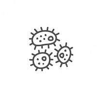

Perdas
Grande parte da perda da soja ocorre devido ao mal armazenamento

Temperatura e umidade
A causa disso são as temperaturas e umidades desfavoráveis
Aumente o seu ROIC/ROE
Com a SojaTech, você diminuirá suas perdas, ocasionando o aumento do seu capital